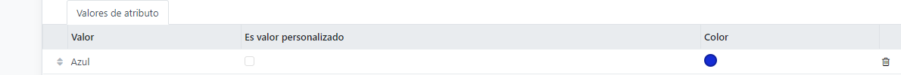
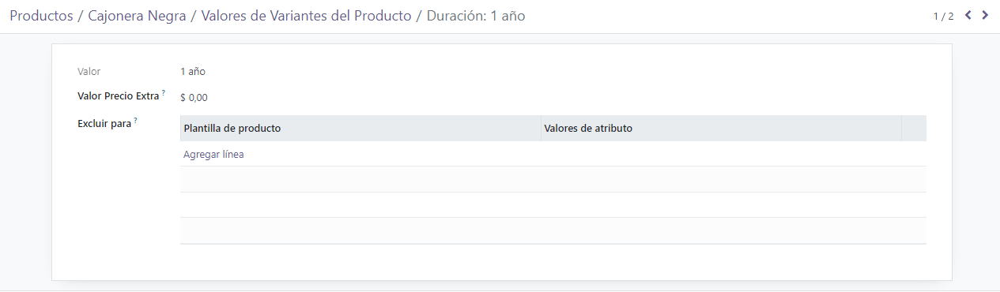

Product variants¶
Product variants are used to give single products a variety of different characteristics and options for customers to choose from, such as size, style, or color, just to name a few.
Products variants can be managed via their individual product template, or by navigating to either the Product Variants or Attributes page. All of these options are located within the Odoo Sales application.
Example
An apparel company has the following variant breakdown for one their best-selling t-shirts:
Unisex Classic Tee
Color: Blue, Red, White, Black
Size: S, M, L, XL, XXL
Here, the T-shirt is the product template, and T-shirt: Blue, S is a specific product variant.
Color and Size are attributes, and the corresponding options (like Blue and S) are values.
In this instance, there is a total of twenty different product variants: four Color options multiplied by five Size options. Each variant has its own inventory count, sales totals, and other similar records in Odoo.
See also
Configuration¶
To use product variants, the Variants setting must be activated in the Odoo Sales application.
To do that, go to , and locate the Product Catalog section at the top of the page.
In that section, check the box to enable the Variants feature.

Then, click Save at the top of the Settings page.
Attributes¶
Before product variants can be set up, attributes must be created. To create, manage, and modify attributes, navigate to .
Note
The order of attributes on the Attributes page dictates how they appear on the Product Configurator, Point of Sale dashboard, and eCommerce pages.
To create a new attribute from the Attributes page, click New. Doing so reveals a blank attributes form that can be customized and configured in a number of ways.

First, create an Attribute Name, such as Color or Size.
Next, in the optional Category field, select a category from a drop-down menu to group similar attributes under the same section for added specificity and organization.
Note
To view the details related to the attribute category selected, click the internal link ➡️ (arrow) icon to the far-right of the Category field. Doing so reveals that attribute category’s detail form.

Here, the Category Name and Sequence is displayed at the top. Followed by Related Attributes associated with the category. These attributes can be dragged-and-dropped into a desirable order of priority.
Attributes can be directly added to the category, as well, by clicking Add a line.
Tip
To create an attribute category directly from this field, start typing the name of the new category, then select either Create or Create and edit… from the drop-down menu that appears.
Clicking Create creates the category, which can be modified later. Clicking Create and edit… creates the category and reveals a Create Category pop-up window, in which the new attribute category can be configured and customized.
Beneath the Category field are the Display Type options. The Display Type determines how this product is shown on the online store, Point of Sale dashboard, and Product Configurator.
The Display Type options are:
Radio: options appear in a bullet-style list on the product page of the online store.
Pills: options appear as selectable buttons on the product page of the online store.
Select: options appear in a drop-down menu on the product page of the online store.
Color: options appear as small, colored squares, which reflect any HTML color codes set, on the product page of the online store.

The Variants Creation Mode field informs Odoo when to automatically create a new variant once an attribute is added to a product.
Instantly: creates all possible variants as soon as attributes and values are added to a product template.
Dynamically: creates variants only when corresponding attributes and values are added to a sales order.
Never (option): never automatically creates variants.
Warning
Once added to a product, an attribute’s Variants Creation Mode cannot be edited.
Lastly, the eCommerce Filter Visibility field determines whether these attribute options are visible to the customer on the front-end, as they shop on the online store.
Visible: the attribute values are visible to customers on the front-end.
Hidden: the attribute values are hidden from customers on the front-end.
Attribute values¶
Attribute values should be added to the Attribute Values tab. Values can be added to an attribute at any time, if needed.
To add a value, click Add a line in the Attribute Values tab.
Then, enter the name of the value in the Value column. Next, check the box in the Is custom value column, if the value is custom (i.e. the customer gets to provide unique specifications that are specific to this particular value).
Note
If the Display Type - Color option is selected, the option to add an HTML color code will appear to the far-right of the value line, to make it easier for salespeople and customers to know exactly what color option they’re choosing.
To choose a color, click the blank circle in the Color column, which reveals an HTML color selector pop-up window.

In this pop-up window, select a specific color by dragging the color slider to a particular hue, and clicking on the color portion directly on the color gradient window.
Or, choose a specific color by clicking the dropper icon, and selecting a desired color that’s currently clickable on the screen.
Tip
Attributes can also be created directly from the product template by adding a new line and typing the name into the Variants tab.
Once an attribute is added to a product, that product is listed and accessible, via the attribute’s Related Products smart button. That button lists every product in the database currently using that attribute.
Product variants¶
Once an attribute is created, use the attribute (and its values) to create a product variant. To do that, go to , and select an existing product to view that desired product’s form. Or, click Create to create a new product, to which a product variant can be added.
On the product form, click the Attributes & Variants tab to view, manage, and modify attributes and values for the product.

To add an attribute to a product, and subsequent attribute values, click Add a line in the Attributes & Variants tab. Then, choose the desired attribute from the drop-down menu that appears.
Tip
Attributes can be created directly from the Attributes & Variants tab of a product form. To do that, start typing the name of the new attribute in the blank field, and select either Create or Create and edit… from the mini drop-down menu that appears.
Clicking Create creates the attribute, which can be customized later. Clicking Create and edit… creates the attribute, and a Create Attribute pop-up form appears. In the pop-up form, proceed to modify the attribute in a number of ways.
Once an attribute is selected in the Attribute column, proceed to select the specific attribute values to apply to the product, via the drop-down menu available in the Values column.
Note
There is no limit to how many values can be added.
Tip
Similar product variant creation processes are accessible through the Purchase, Inventory, and eCommerce applications.
Configure variants¶
To the far-right of the attribute line is a Configure button. When clicked, Odoo reveals a separate page showcasing those specific Product Variant Values.

Here, the specific Value name, HTML Color Index (if applicable), and Value Price Extra are viewable.
Note
The Value Price Extra represents the increase in the sales price if the attribute is selected.
When a value is clicked on the Product Variant Values page, Odoo reveals a separate page, detailing that value’s related details.
On the specific product variant detail page, the Value and Value Price Extra fields can be found, along with an Exclude for field.
In the Exclude for field, different Product Templates and specific Attribute Values can be added. When added, this specific attribute value will be excluded from those specific products.
Variants smart button¶
When a product has attributes and variants configured in its Attributes & Variants tab, a Variants smart button appears at the top of the product form. The Variants smart button indicates how many variants are currently configured for that specific product.

When the Variants smart button is clicked, Odoo reveals a separate page showcasing all the specific product variant combinations configured for that specific product.

Impact of variants¶
In addition to offering more detailed product options to customers, product variants have their own impacts that can be taken advantage of throughout the Odoo database.
Barcode: barcodes are associated with each variant, instead of the product template. Each individual variant can have its own unique barcode/SKU.
Price: every product variant has its own public price, which is the sum of the product template price and any extra charges for particular attributes.
Example
A red shirt’s sales price is $23 – because the shirt’s template price is $20, plus an additional $3 for the red color variant. Pricelist rules can be configured to apply to the product template, or to the variant.
Inventory: inventory is counted for each individual product variant. On the product template form, the inventory reflects the sum of all variants, but the actual inventory is computed by individual variants.
Picture: each product variant can have its own specific picture.
Note
Changes to the product template automatically apply to every variant of that product.
See also